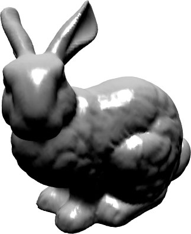

The purpose of Project 5 is to practice basic geometry processing and shaded rendering.
Create a new remote repository called "project5" on classes.csc.lsu.edu, and clone it to your local computer.
Add the four WebGL utility libraries.
Create and add the following JavaScript and HTML files, following the template of “A complete model viewer application” in the notes.
Viewer.jsViewer.htmlThis application will take a table of vertices and a table of triangles in JSON format, calculate a smoothed normal for each vertex, render the resulting data using basic lighting, and allow the user to tumble the shaded model using the mouse.
The tables of vertices and triangles are given here:
The output should look something like this:
Depending on the browser, bunny.js may take some time to process. During development, you may test using one of these reduced copies of the same model:
Do be advised: the bunny model is imperfect. As a triangulation of a scanned point cloud, it has holes (particularly in the bottom) and degenerate triangles. These flaws become especially apparent in the reduced copies. However, the head and body should look correct.
Format carefully and eliminate any dead code. Push your work from your local repository to your remote repository on classes.csc.lsu.edu before the deadline.